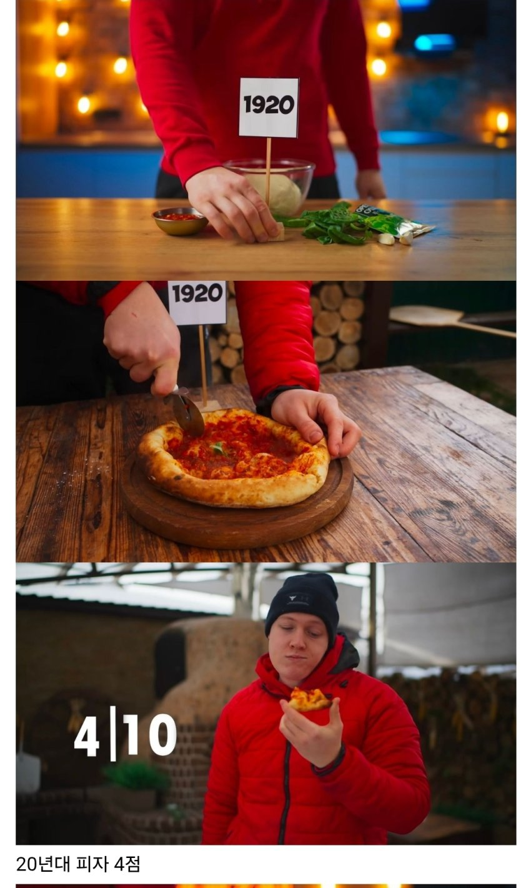
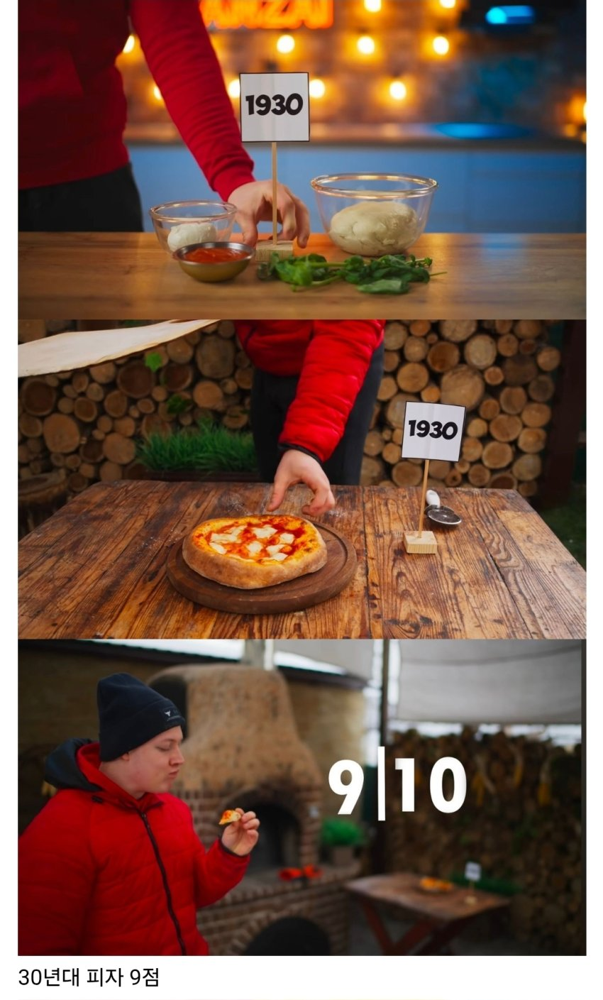
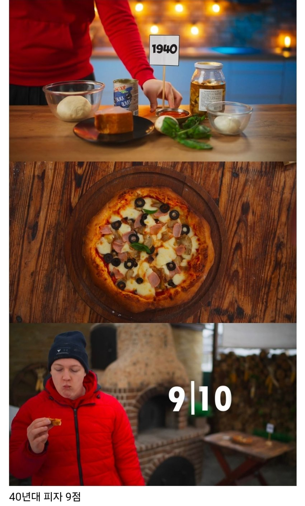
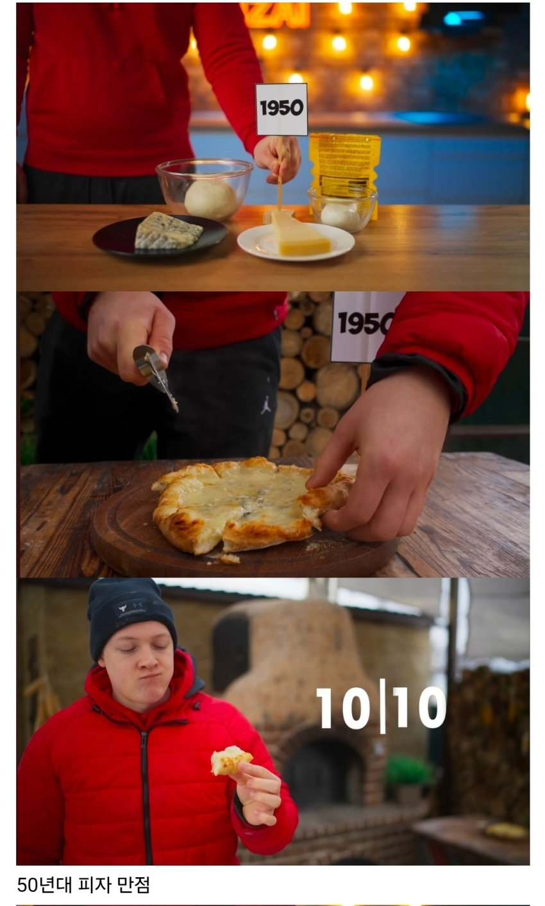
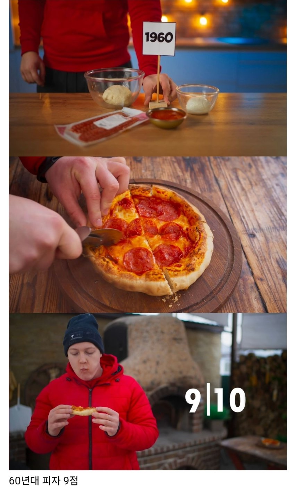
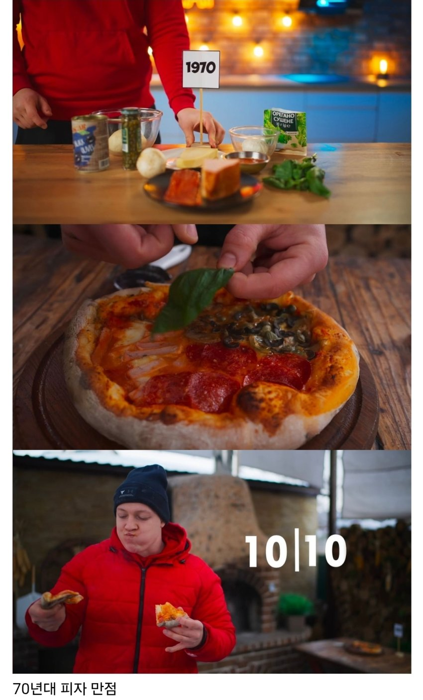
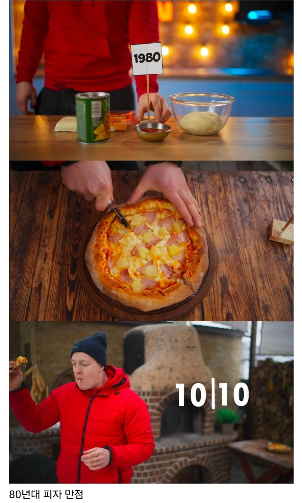
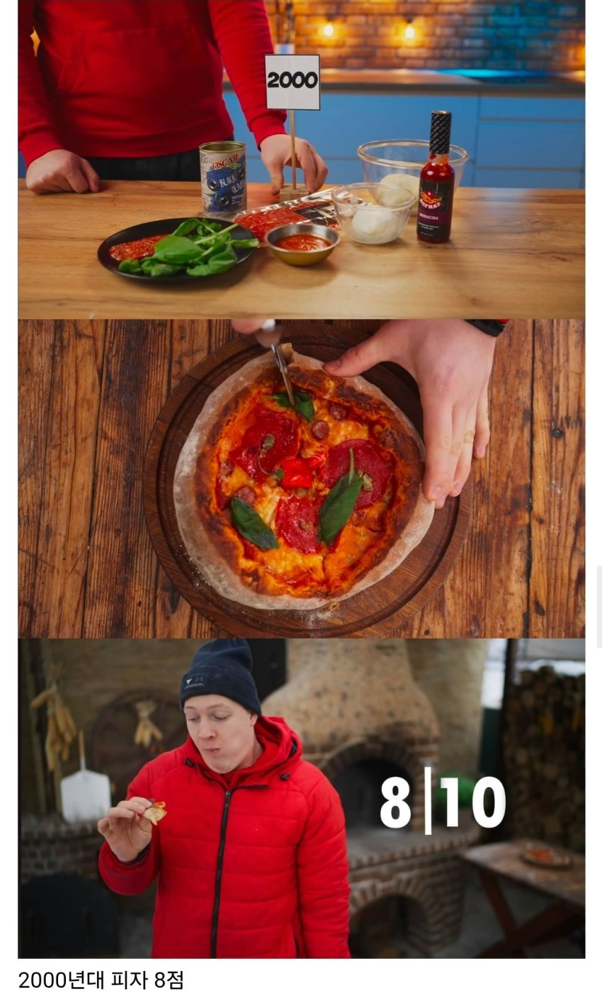
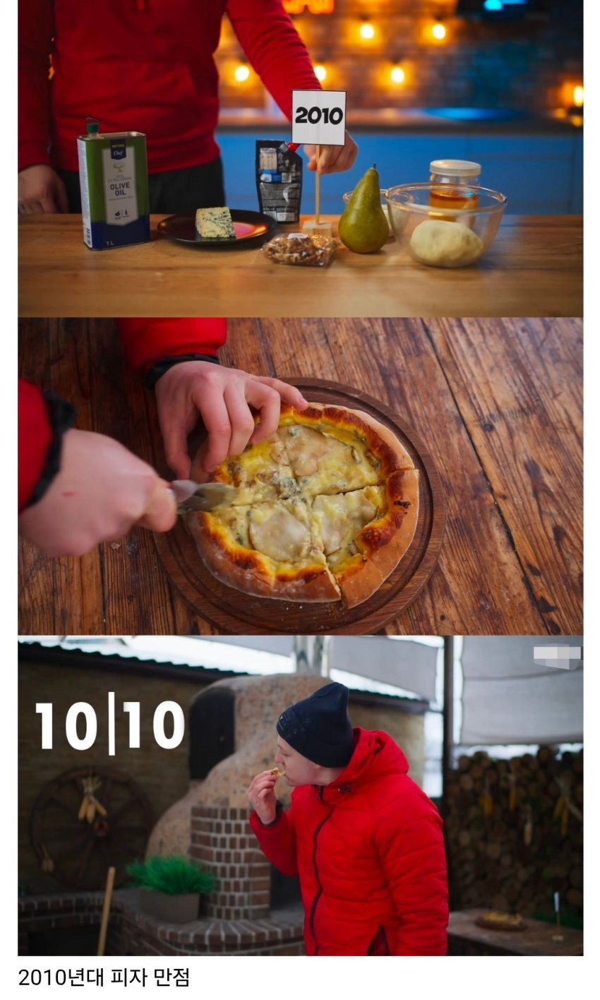

어느 년대 피자 맛있어보임?









어느 년대 피자 맛있어보임?
댓글
수집 당시 댓글 80개
ㅇㅇ · 11.20 22:44:50
· ㅇㅇ · 11.24 04:55:15
Randosell · 11.20 22:51:37
ㅇㅇ · 11.20 22:54:47
ㅇㅇ · 11.20 23:00:32
ㅇㅇ · 11.20 23:23:47
봇치쟝 · 11.24 00:25:42
ㅇㅇ · 11.24 00:26:38
· ㅇㅇ · 11.24 06:04:29
<>~~ · 11.24 00:26:40
restinpieceofcake · 11.24 00:26:40
· 제변소 · 11.24 00:26:52
· ㅇㅇ · 11.24 01:25:24
제변소 · 11.24 00:26:43
· restinpieceofcake · 11.24 00:27:14
· ㅇㅇ · 11.24 00:37:46
ㅇㅇ · 11.24 00:27:24
ㅇㅇ · 11.24 00:28:16
ㅇㅇ · 11.24 00:28:41
· ㅇㅇ · 11.24 02:21:11
ㅇㅇ · 11.24 00:29:09
ㅇㅇ · 11.24 00:29:42
ㅇㅇ · 11.24 00:30:47
ㅇㅇ · 11.24 00:30:58
ㅇㅇ · 11.24 00:31:58
ㅇㅇ · 11.24 00:33:13
ㅇㅇ · 11.24 00:34:29
ㅇㅇ · 11.24 00:35:46
ㅇㅇ · 11.24 00:36:47
ㅇㅇ · 11.24 00:37:04
· 제변소 · 11.24 00:38:02
· ㅇㅇ · 11.24 00:40:03
장카설유 · 11.24 00:37:21
ㅇㅇ · 11.24 00:38:10
ㅇㅇ · 11.24 00:38:31
ㅇㅇ · 11.24 00:40:58
악의꽃 · 11.24 00:43:15
SonyXperia · 11.24 00:48:15
Enter · 11.24 00:49:47
처녀따개 · 11.24 00:51:20
형아어디가 · 11.24 00:52:10
· 형아어디가 · 11.24 00:52:35
· 형아어디가 · 11.24 00:52:46
· 형아어디가 · 11.24 00:52:58
· ㅇㅇ · 11.24 02:47:37
· ㅇㅇ · 11.24 03:33:16
· dd · 11.24 07:45:24
· ㅇㅇ · 11.24 10:38:18
d · 11.24 00:52:32
ㅇㅇ · 11.24 00:53:20
ㅇㅇ · 11.24 00:59:05
ㅇㅇ · 11.24 01:01:26
히이잉 · 11.24 01:03:47
ㅇㅇ · 11.24 01:05:42
ㅇㅇ · 11.24 01:16:23
ㅇㅇ · 11.24 01:19:16
ㅇㅇ · 11.24 01:35:36
ㅇㅇ · 11.24 01:38:44
파인애플
10점
히이잉 · 11.24 01:47:10
Dd · 11.24 02:46:45
웹툰본적없음 · 11.24 03:15:55
트라야누스 · 11.24 05:31:46
ㅇㅇ · 11.24 05:47:37
ㅇㅇ · 11.24 06:08:00
ㅇㅇ · 11.24 06:29:53
ㅇㅇ · 11.24 07:16:51
· ㅇㅇ · 11.24 07:17:21
ㅇㅇ · 11.24 07:25:35
ㅇㅇ · 11.24 07:45:10
58 · 11.24 08:39:23
ㅇㅇ · 11.24 09:19:36
ㅇㅇ · 11.24 10:18:54
ㅇㅇ · 11.24 10:32:48
ㅇㅇ · 11.24 12:26:43
ㅇㅇ · 11.24 12:47:21
ㅇㅇ · 11.24 14:20:24
겜하는곰 · 11.24 15:36:26
ㅇㅇ · 11.24 17:55:43
ㅇㅇ · 11.24 17:59:35
초등학생이다 · 11.24 20:40:03